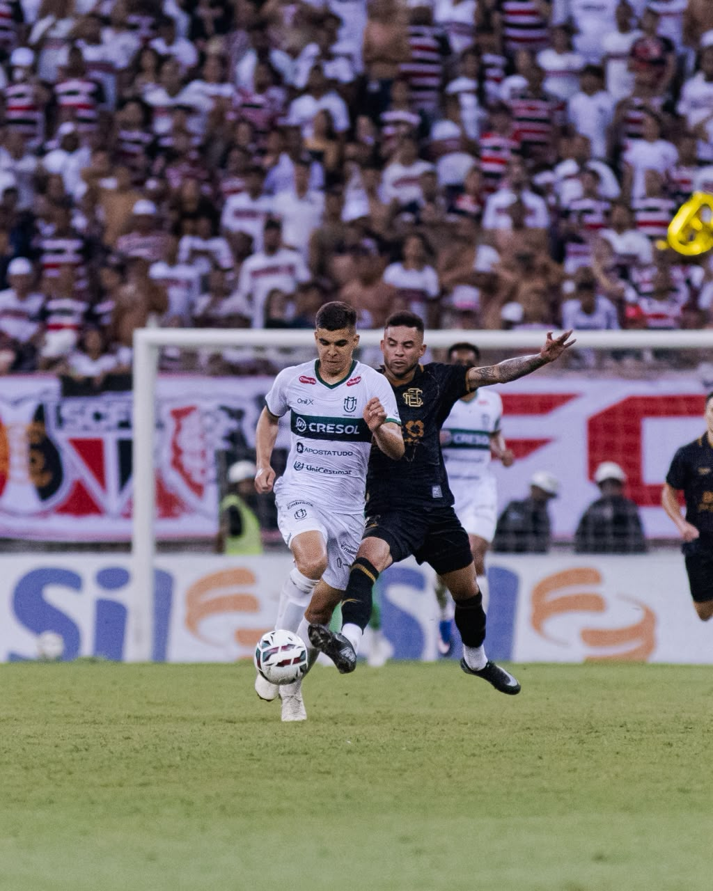

O Santa Cruz está de volta à Série B do Campeonato Brasileiro. Depois de atravessar um período de queda esportiva que levou o clube até a Série D, o Tricolor pernambucano completou mais uma etapa de sua reconstrução ao garantir matematicamente o acesso na Série C de 2026.
A vaga foi confirmada no empate por 1 a 1 com o Maringá, neste sábado, em 3 de outubro, na Arena de Pernambuco. Adeílson Maranhão abriu o placar para a equipe paranaense praticamente no início da partida, mas Pedro Favela empatou de cabeça aos cinco minutos do segundo tempo. O ponto levou o Santa Cruz aos 11 no quadrangular e garantiu uma vaga duas primeiras posições da chave.
Mais do que um acesso isolado, a conquista representa a continuidade de uma recuperação em ritmo acelerado. Em 2025, o Santa Cruz conseguiu subir da Série D para a Série C após eliminar o América-RN nas quartas de final. Um ano depois, conquistou a segunda promoção consecutiva e assegurou lugar na Série B de 2027.
Veja os melhores momentos da partida abaixo:
Acesso encerra longo período fora da segunda divisão
O retorno ganha peso especial quando colocado em perspectiva. A última partida do Santa Cruz pela Série B havia ocorrido em 21 de novembro de 2017, uma vitória por 5 a 2 sobre o Juventude no Arruda. Desde então, o clube passou nove temporadas fora da segunda divisão nacional.
Nesse intervalo, o Santa Cruz viveu temporadas de instabilidade, perdeu espaço no cenário nacional e chegou ao ponto de disputar a Série D. A sequência de acessos em 2025 e 2026 muda novamente o patamar esportivo do clube e recoloca a equipe em uma divisão que representa um caminho mais próximo da elite do Campeonato Brasileiro.
O acesso também reforça a recuperação de calendário nacional do Tricolor. A Série B garante uma temporada de maior exposição, confrontos contra clubes de peso e uma receita financeira muito diferente daquela enfrentada pelo Santa Cruz durante os anos nas divisões inferiores.
O caminho até o acesso teve uma característica curiosa. O Santa Cruz não dominou a primeira fase da Série C. A equipe avançou na oitava colocação, a última vaga disponível para os quadrangulares, depois de empatar por 1 a 1 com o Anápolis na rodada final. Botafogo-PB, Brusque, Ferroviária, Maringá, Floresta, Inter de Limeira e Paysandu completaram o grupo dos oito classificados.
Foi justamente na etapa decisiva que o Santa Cruz mudou de nível.
Na abertura do quadrangular, venceu o Botafogo-PB por 1 a 0 na Arena de Pernambuco. O resultado teve peso adicional porque o adversário havia terminado a primeira fase na liderança e chegava com uma sequência de 11 partidas sem derrota.
Depois veio outro 1 a 0, desta vez contra o Maringá, fora de casa. Matheus Vinícius decidiu a partida com um chute de longa distância. O Santa Cruz passou a somar seis pontos em seis possíveis e começou a transformar uma classificação obtida no limite em uma campanha dominante no quadrangular.
A terceira vitória consecutiva foi novamente por 1 a 0, contra o Floresta. Renato marcou de voleio, e a equipe chegou aos nove pontos com 100% de aproveitamento na fase decisiva.
Nos dois jogos seguintes, o Santa Cruz não venceu, mas conseguiu exatamente os resultados necessários para concluir o objetivo. Empatou por 1 a 1 com o Floresta, em Fortaleza, e depois repetiu o placar diante do Maringá na Arena de Pernambuco. Com três vitórias e dois empates nas cinco primeiras rodadas do quadrangular, chegou invicto aos 11 pontos e confirmou o acesso antes da última partida.
Torcida volta a ser protagonista na caminhada
O peso dos torcedores coral também marcou a campanha. Contra o Floresta, na terceira rodada, 44.951 pessoas acompanharam a vitória do Santa Cruz na Arena de Pernambuco. Na partida que confirmou o acesso, diante do Maringá, o público chegou a 45.500.
A presença em massa reforçou uma das características históricas do clube: mesmo depois de temporadas longe das principais divisões nacionais, o Santa Cruz continuou contando com uma torcida capaz de transformar jogos decisivos em grandes eventos.
O acesso de 2026, portanto, não se resume ao empate contra o Maringá. Ele fecha um ciclo iniciado com a recuperação na Série D e confirma uma sequência de duas promoções consecutivas.
Como está a classificação da Série C 2026
Após cinco das seis rodadas do quadrangular, apenas o Santa Cruz está matematicamente garantido na Série B de 2027. As outras três vagas seguem abertas.
Grupo do Santa Cruz
- 1. Santa Cruz — 11 pontos — acesso garantido
- 2. Maringá — 8 pontos
- 3. Floresta — 5 pontos
- 4. Botafogo-PB — 2 pontos — eliminado
Maringá e Floresta disputam diretamente a segunda vaga do grupo, enquanto o Botafogo-PB já não possui possibilidade matemática de subir.
Na última rodada, Maringá e Floresta se enfrentam. O clube paranaense entra na partida com vantagem de três pontos e joga por um empate para garantir o acesso. O Floresta precisa vencer e ainda superar a diferença existente nos critérios de desempate.
Segundo quadrangular está completamente aberto
- 1. Ferroviária — 8 pontos
- 2. Inter de Limeira — 7 pontos
- 3. Brusque — 6 pontos
- 4. Paysandu — 4 pontos
Nenhum clube dessa chave garantiu o acesso antecipadamente.
A Ferroviária segue na liderança mesmo depois de perder por 1 a 0 para o Paysandu na quinta rodada. A Inter de Limeira aparece logo atrás, com sete pontos, depois do empate por 2 a 2 diante do Brusque. O resultado manteve os quatro participantes matematicamente vivos.
A Ferroviária enfrenta justamente a Inter de Limeira na rodada decisiva. O clube de Araraquara garante o acesso com vitória ou empate. A Inter também depende apenas de si: se vencer, ultrapassa a Ferroviária e confirma a vaga.
Brusque e Paysandu fazem o outro confronto. O time catarinense chega com seis pontos, enquanto o Papão soma quatro depois de conseguir sua primeira vitória no quadrangular justamente contra a Ferroviária. Dependendo da combinação de resultados, ambos ainda podem terminar entre os dois primeiros.
Última rodada da fase de acesso
A sexta rodada dos quadrangulares está prevista para 10 de outubro, com os quatro jogos às 17h, pelo horário de Brasília:
- Botafogo-PB x Santa Cruz
- Maringá x Floresta
- Brusque x Paysandu
- Ferroviária x Inter de Limeira
O Santa Cruz entra na última rodada já livre da pressão pelo acesso, embora ainda tenha a liderança da chave e a classificação à final da Série C como objetivos. Para os demais candidatos, a rodada vale praticamente uma temporada inteira.
Como ficou o rebaixamento da Série C 2026
Na outra ponta da tabela, a luta para não cair foi encerrada ainda na primeira fase da competição. Diferentemente de temporadas anteriores, a edição de 2026 teve apenas duas quedas para a Série D de 2027. Os clubes rebaixados foram Confiança e Itabaiana, ambos de Sergipe.
O Confiança foi o primeiro a ter o descenso matematicamente confirmado. A queda ocorreu na 18ª rodada, depois da derrota por 1 a 0 para o Anápolis, no Batistão.
A segunda vaga na Série D foi decidida apenas na 19ª e última rodada. Itabaiana, Barra-SC e Anápolis chegaram ao fim da primeira fase ainda envolvidos diretamente na disputa pela permanência. O Itabaiana precisava de resultado para continuar na Série C, mas perdeu por 2 a 0 para o Botafogo-PB e terminou na 19ª posição, tendo o rebaixamento confirmado.
Brusque e Paysandu seguem vivos na outra chave. Os dois primeiros colocados de cada quadrangular sobem para a Série B, enquanto os líderes dos grupos avançam para a final que decidirá o campeão da Série C.
De volta ao mapa nacional
O principal significado do acesso está no caminho percorrido. Em setembro de 2025, o Santa Cruz comemorava a saída da Série D. Pouco mais de um ano depois, já havia garantido lugar na Série B.
A reconstrução esportiva não elimina os desafios que acompanham uma subida de divisão, mas estabelece uma mudança objetiva de cenário. O Santa Cruz passou de um clube lutando para recuperar espaço no calendário nacional para uma equipe com duas promoções consecutivas e presença assegurada na segunda divisão.
A segunda divisão será um novo nível de exigência, e o regulamento da edição de 2027 ainda dependerá das definições oficiais para aquela temporada. Como referência sobre as mudanças recentes da competição, como o novo regulamento da Série B adotado em 2026.
Independentemente do que acontecer na disputa pelo título da Série C, o objetivo central de 2026 já foi alcançado. Depois de entrar no quadrangular como o oitavo e último classificado da primeira fase, o Santa Cruz transformou a etapa decisiva, permaneceu invicto nas cinco primeiras rodadas e tornou-se o primeiro clube confirmado na Série B de 2027. Para um time que há pouco tempo tentava simplesmente reconstruir sua presença nacional, o segundo acesso consecutivo representa uma das viradas mais importantes de sua trajetória recente.